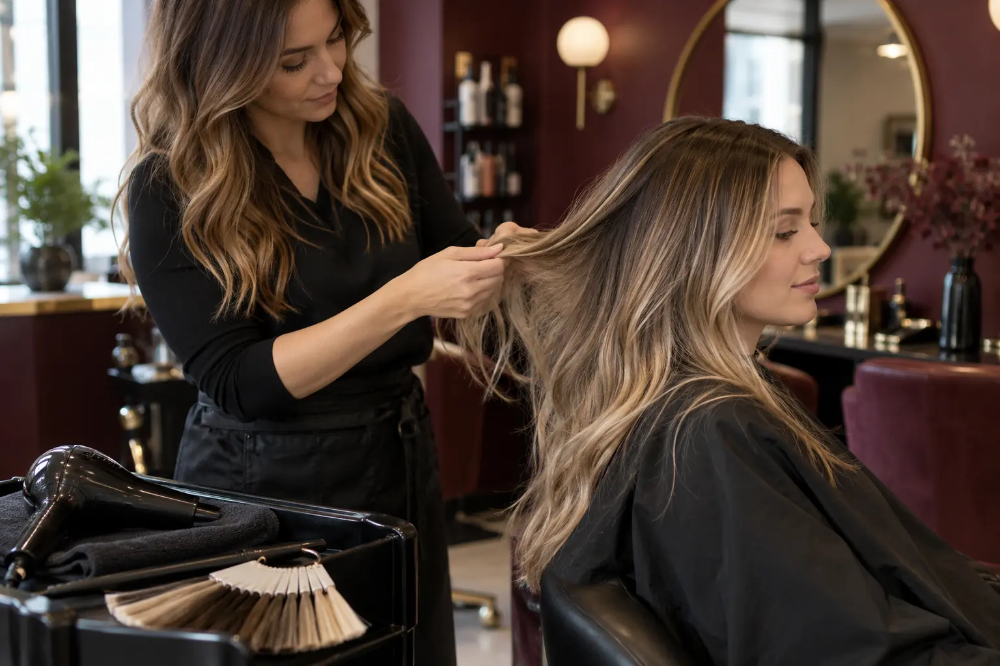

Balayage ir Airtouch: kuo skiriasi technika bei rezultato planavimas?
Autorius: Madbeauty redakcija · Numatyta 2026 m. gruodžio 13 d. 10:00 (Lietuvos laiku)
Balayage dažniau nusako palaipsnį spalvos paskirstymą, o AirTouch – sruogų atrankos būdą. Sužinokite, kaip lyginti norimą rezultatą ir konkretaus vizito apimtį.

Balayage ir AirTouch nebūtinai yra du priešingi pasirinkimai. „Balayage“ gali apibūdinti palaipsnį šviesesnės spalvos paskirstymą, o „AirTouch“ – sruogų atranką oro srove. Wella aprašymuose AirTouch derinamas ir su balayage, ir su nuo šaknų išdėstomomis sruogomis. Todėl pavadinimas vienas pats nepasako, kur prasidės šviesinimas, kokia bus spalvos apimtis ar kas įskaičiuota į vizitą. Wella paaiškinimas apie balayage ir sruogas; Wella AirTouch ir balayage aprašymas.
Ką lygina šie pavadinimai?
Wella balayage pateikia kaip palaipsnį spalvos paskirstymą, atskirdama jį nuo sruogų šviesinimo ar visų plaukų šviesinimo ir tonavimo. AirTouch aprašyme oro srovė atskiria trumpesnius plaukus, todėl atrenkamos šviesinamos sruogos. Tai skirtingi palyginimo aspektai: vienas labiau nusako spalvos išdėstymą, kitas – sruogų atrankos būdą.
Wella pateikiamas skirtumas tarp AirTouch balayage, kur akcentuojamas ilgis ar galiukai, ir AirTouch highlights nuo šaknų, parodo, kodėl verta išsiaiškinti konkrečią užduotį. Jei domina šviesesni galiukai ir švelnus perėjimas, pasakykite tai tiesiai. Jei norite šviesesnių sruogų nuo šaknų, įvardykite jų pradžios vietą. Tada meistras gali paaiškinti, ar siūlo balayage, AirTouch, ar jų derinį.
Palyginkite rezultatą, o ne vien technikos vardą
Prieš rinkdamiesi pasiūlymą, užfiksuokite tris dalykus: kur turėtų prasidėti šviesesnė spalva, kiek ryškus turėtų būti perėjimas ir kokie darbai turi įeiti į vizitą. Pavyzdžiui, „šviesesni galiukai, tamsesnis viršus, be ryškių juostų“ yra konkretesnė užduotis nei vien „noriu AirTouch“.
- Spalvos vieta: prie šaknų, per ilgį ar daugiausia galiukuose?
- Paskirstymas: palaipsnis perėjimas ar aiškiau atskirtos šviesesnės sruogos?
- Vizito apimtis: ar į pasiūlymą įtrauktas tonavimas, kirpimas arba kiti papildomi darbai?
Tai iliustracinis pasirinkimo pavyzdys, ne konkretaus rezultato garantija. Įkvėpimo nuotrauka gali parodyti spalvos vietą ir kontrastą, tačiau pati neatskleidžia, kaip buvo atrinktos sruogos ar kokie darbai atlikti. Aptarkite norimą vaizdą ir ankstesnio dažymo istoriją, o pasiūlymą vertinkite pagal konkrečią darbų apimtį.
Ką reiškia kaina ir trukmė pasiūlyme?
Kaina ir vizito trukmė priklauso nuo konkretaus pasiūlymo apimties, todėl vieną technikos pavadinimą lyginti su kitu nepakanka. 2026 m. spalio 9 d. peržiūrėtame „Looks“ meniu AirTouch buvo nurodytas kaip 5–6 val. trukmės paslauga, kainuojanti 220–280 Eur. Tai vieno salono meniu pavyzdys, o ne Lietuvos kainų vidurkis ar pažadas, kad kiekvienas AirTouch vizitas truks tiek pat.
Prieš rezervuodami patikrinkite, kokie darbai įtraukti į konkrečią kainą ir trukmę. „Looks“ meniu pavyzdys yra tik to pasiūlymo aprašas. Kitų salonų kainų ar įtrauktų darbų iš jo nustatyti negalima.
Balayage: metodo paskirtis ir paslaugos apimtis
Balayage pavadinimas padeda nusakyti norimą spalvos išdėstymą, bet ne visą paslaugos paketą. Prieš pasirinkdami išsiaiškinkite, ar siūlomas tik šviesinimo darbas, ar taip pat tonavimas ir kiti sutarti darbai. Skirtingų salonų meniu šiuos darbus gali pateikti atskirai, todėl lyginkite tai, kas iš tiesų įtraukta, o ne vien pavadinimus.
Šviesinimo planas ir tinkamas rezultatas priklauso nuo konkrečios užduoties bei plaukų istorijos. Šis gidas neparenka dažų formulės ar individualaus vizito plano ir nepateikia šviesinimo instrukcijos namuose.
Procedūrų aprašai kataloge: Balayage. Miestą ir realaus teikėjo pasiūlymą pasirinkite kataloge, kai tokia pasiūla pateikta.
Susiję gidai
Šaltiniai
- Žirmūnų 22 · plaukų paslaugų meniu · www.treatwell.lt
- Faces Hair & Makeup · dažymo ir kirpimo apimtis · www.treatwell.lt
- Looks · kirpimas ir dažymas · www.treatwell.lt
- NHS · reakcijos į plaukų dažus · www.nhs.uk
- Wella · dažų saugos testai · www.wella.com
- Wella · balayage, sruogos ir šviesinimas · www.wella.com
- Wella: AirTouch ir balayage skirtumas · us.wella.professionalstore.com